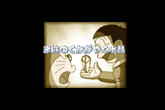

Doraemon - Midori no Wakusei Dokidoki Daikyuushutsu! (Japan)
Stateless / Passcode 💾 MultiBoot 🎮 4P Link 🔌 Mobile Adapter GB (CGB-005)
Cartridge Identity
- Game Code
ADRJ(FamilyADR)- Header Title
DORAEMON- Maker / Revision
E5/ rev0- ROM Size
- 8.0 MiB (8,388,608 B)
- Save Media
None / Unknown- SHA-256
06ae24d11a9b69e64231619df64f9c00e709b33d47ef2d635cb7fae818cf9002- Engine / SDK Group
comm-004(98 families)
Screenshots

Niche & Rare Accessories
Detected niche/rare GBA accessory support: 🔌 Mobile Adapter GB (CGB-005).
Full 343-ROM corpus breakdown in the Cartridge Hardware & Niche Accessories Reference · auto-detected from ROM bytes via
gbakit inspect.
- Mobile Adapter GB (CGB-005)
- Mobile System GB HTTP/1.0 + SMTP/POP3 stack
Link Cable & Multiplayer Communications
This title contains detected communication capabilities: 💾 MultiBoot 🎮 4P Link.
Detailed protocol specifications, SIO registers, Joybus commands, and MultiBoot sequences are documented in the Link & Multiplayer Reference.
- Multi-Player SIO (4P)
- 16-bit ring network · SIOCNT (
0x04000128) literals:0x08fc80,0x090d60,0x090f6c· SIODATA32/SIOMULTI0 (0x04000120) literals:0x0918b8,0x093750 - Single-Cart MultiBoot
- Single-Cartridge MultiBoot (Download Play) client/server handler · Thumb SWI 0x25 (
0xDF25):0x5cef98,0x5d7be0,0x63f00c,0x6a89b6
Cartridge Storage Architecture: Stateless / Passcode
Zero non-volatile battery hardware: This cartridge PCB contains ROM only (no SRAM, Flash, or EEPROM chips). Progression is preserved via on-screen passcodes or session-only gameplay. No
.sav file is generated or required.
ROM Assets, Compression & Audio
- BIOS Compression
- LZ77 (
0x10): 0 streams · RLE (0x30): 0 streams - ROM Pointer Tables
- 78 tables (0 pointing to validated compressed streams)
- SDK Backup Tags
SRAM_V110
Asset Map (formatkit.asset-map.v1)
Download ADRJ-r0-06ae24d11a9b69e6.asset-map.json.gz (211,904 B (206.9 KiB)) Verified PASS · 18.02% coverage
| Metric | Bytes / Value | Entries |
|---|---|---|
| Identified | 185,186 B (180.8 KiB) (2.21%) | 1,799 |
| Mapped | 0 B (0.00%) | 0 |
| Opaque | 1,326,159 B (1.26 MiB) (15.81%) | 1 |
| Unknown | 6,877,263 B (6.56 MiB) (81.98%) | 1,736 |
| Total ROM Size | 8,388,608 B (8.00 MiB) | 3,536 |
| Coverage % | 18.02% | — |
| Entries w/ Code Refs | 1,919 / 3,536 (54.27%) | — |
Top Identified Formats: gfx.gba-palette (1,797 · 173,664 B (169.6 KiB)) · compress.bios-huffman (1 · 11,330 B (11.1 KiB)) · gba.rom-header (1 · 192 B)
Largest unknown Extents (Headerless / Custom Asset Candidates)
| Offset | Size | Shannon Entropy | Code Refs |
|---|---|---|---|
0x0054A554 | 608,340 B (594.1 KiB) | 6.803 bits/B | 0 |
0x00660020 | 374,640 B (365.9 KiB) | 6.693 bits/B | 0 |
0x00617D34 | 295,628 B (288.7 KiB) | 6.556 bits/B | 0 |
0x00361E34 | 265,148 B (258.9 KiB) | 4.772 bits/B | 0 |
0x005DEDC8 | 233,292 B (227.8 KiB) | 7.222 bits/B | 0 |
gzip -dk ADRJ-r0-06ae24d11a9b69e6.asset-map.json.gz && gbakit map verify rom.gba ADRJ-r0-06ae24d11a9b69e6.asset-map.json
gbakit assets export rom.gba --asset-map ADRJ-r0-06ae24d11a9b69e6.asset-map.json -o out/Text, Fonts & Scene Data
- Primary Text Encoding
- Shift-JIS (uncompressed) (
9ASCII strings ·200Shift-JIS runs) - Font & VWF Indicators
- VWF Width Table 1bpp Font · BIOS SWIs: BitUnPack
0x10:0· LZ770x11/12:7· Huffman0x13:0· RLE0x14/15:3 - Scene & Packaging
30ROM pointer tables (≥32 entries,3≥200) ·1relativeu32TOCs ·597OAM metasprite hits
Hardware MMIO Subsystems
ppu_display0x8000a40,0x8002d04,0x8003a34,0x8005338,0x800d3c4